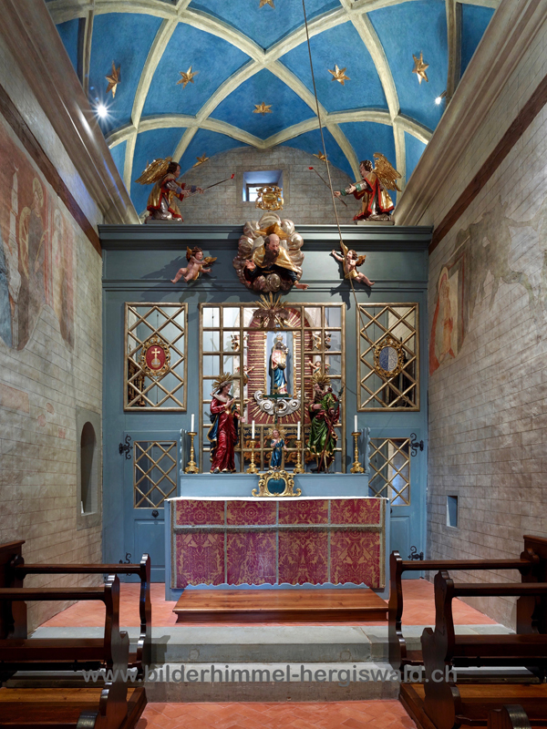
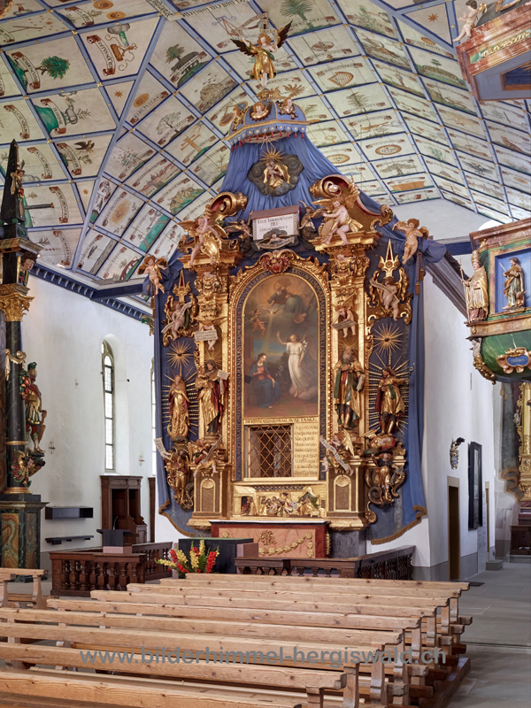
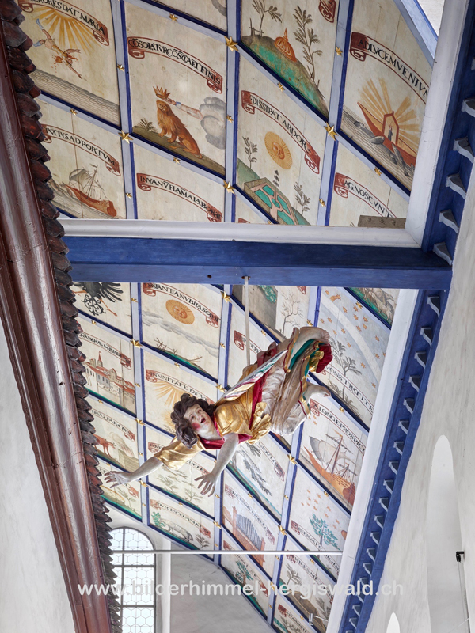
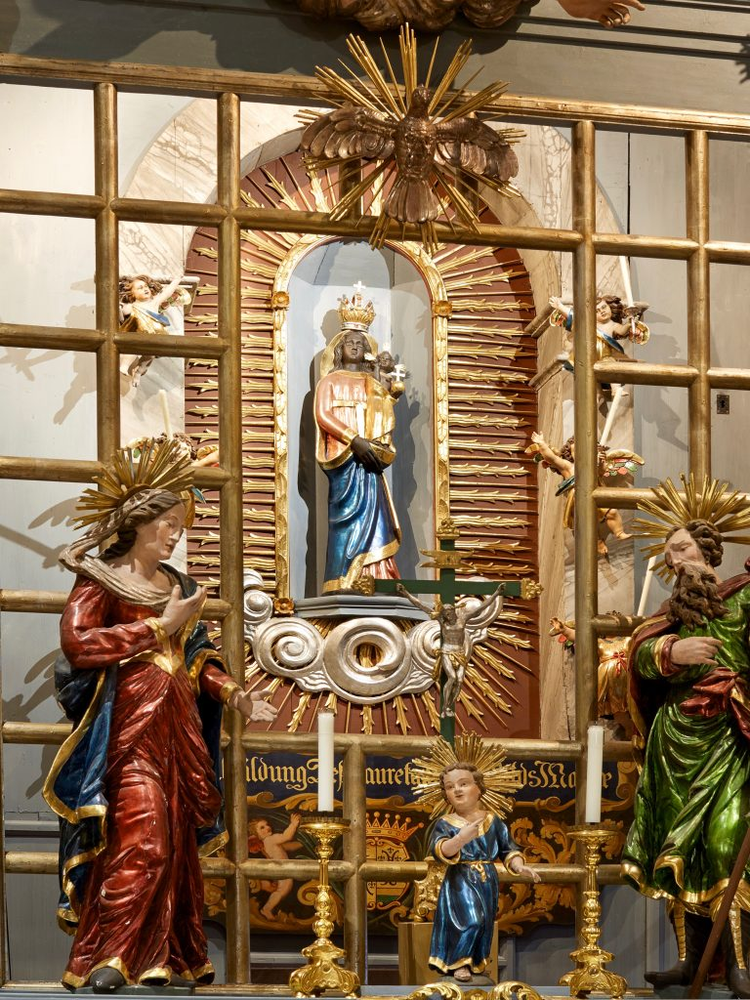

2 – Loretokapelle

Als «Kirchlein in der Kirche» steht die Loretokapelle freigestellt im Zentrum der Anlage.
Zwei grosse Engelsfiguren, die in luftiger Höhe die Kapelle flankieren, vergegenwärtigen die Legende von der wunderbaren Überführung des heiligen Häuschens.

Durch das vergitterte «Engelsfenster» blicken die Pilger ins Innere. Der Raum ist nur etwa 9,5 Meter lang und 4,1 Meter breit und orientiert sich damit an den Massen des Heiligen Hauses von Loreto.
Das Innere ist von einer blau bemalten Tonne mit weissen Stuckrippen und goldenen Sternen überwölbt.

Die reich gestaltete Decke mit ihren Emblemen und Figuren verbindet die Kapelle visuell mit dem grossen Bilderhimmel der Kirche.

In einer Rundbogennische hinter dem Altar thront die schwarz bemalte Holzstatue der Loretomadonna.